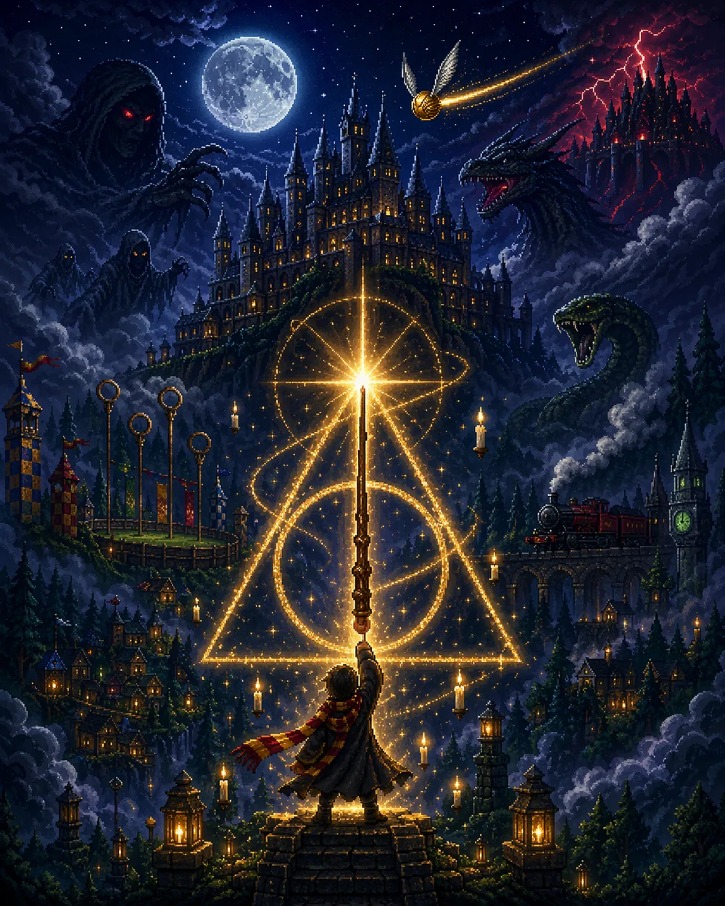

Portfolio · 2024–2026
Portfolio · 2024–2026
Xinyue Feng
Also known as Lily
Games, mods & interactive web
Computer Science student at Kean University, class of 2027. I make games and interactive web apps, and I care most about how they feel to use.
Portfolio · 2024–2026
Also known as Lily
Games, mods & interactive web
Computer Science student at Kean University, class of 2027. I make games and interactive web apps, and I care most about how they feel to use.
Xinyue (Lily) Feng
I’m a Computer Science student at Kean University, graduating in 2027. I’m drawn to human–computer interaction and user-centered design, and I learn best by building things people can use and play.
The Java platformer I designed, drew and coded on my own grew out of a game I loved, Ace Attorney. Class assignments became projects too: a recipe app that turns what’s in your fridge into three recipes with photos, and a tic-tac-toe game with a rule-based AI opponent. In summer 2026 I built a Harry Potter mod for Terraria and took it through route-by-route testing to a 1.0 release candidate.
In October 2026 I led two bigger projects with AI tools: Yuzu Onsen Capybaras, a cozy pixel-art life sim whose winter demo plays in the browser, and Otherworlds, a crossover boss mod for Terraria that is still in development.
Kean UniversityExpected 2027
B.S. in Computer Science
Relevant coursework: HCI / UX, Software Engineering, Data Structures, Databases, Web Development.
Chengdu Sheer Tianyi Game TechnologyJul 2026
TA Intern Engineer, Information Technology Department
Worked with Cascadeur 3D animation and its AI frame interpolation, and on a price-comparison crawler for third-party ticketing platforms.
Chengdu Sanying TechnologyMay – Jun 2026
Computer Vision Data Processing Intern
Organized image data and helped classify images as part of a computer-vision team.
Chengdu 2025 World Games Executive Committee2025
Sports Intern · Outstanding Intern
Coordinated competition logistics and communication between teams.
Dean’s Honor List, Kean UniversitySpring 2026
The Honor Society of Phi Kappa PhiMember
CiGA Game Jam2024
Team member in a 48-hour jam: gameplay design and interaction flow for a playable prototype, refined through rounds of playtesting.
Lanqiao Cup, Third Prize2024
National Software & IT Competition, Visual Arts Design track, Zhejiang division.
I’ve volunteered as a tutor for children in rural areas and helped organize inclusive sports activities for autistic young people.
2024–2026
 01 · Pixel-art life sim · 2026Yuzu Onsen CapybarasA cozy life sim in a hot-spring town, led with AI tools. The winter demo plays in the browser.
01 · Pixel-art life sim · 2026Yuzu Onsen CapybarasA cozy life sim in a hot-spring town, led with AI tools. The winter demo plays in the browser.
 02 · Terraria mod · In developmentOtherworlds38 boss fights from five games, rebuilt move by move for Terraria, led with AI tools.
02 · Terraria mod · In developmentOtherworlds38 boss fights from five games, rebuilt move by move for Terraria, led with AI tools.
 03 · Terraria mod · 2026Wizarding WorldA Harry Potter adventure for Terraria: 12 boss fights and a Horcrux hunt.
03 · Terraria mod · 2026Wizarding WorldA Harry Potter adventure for Terraria: 12 boss fights and a Horcrux hunt.
 04 · Java game · 2024The Adventures of EdgeworthAn Ace Attorney platformer written from scratch in Java Swing, now playable in the browser.
04 · Java game · 2024The Adventures of EdgeworthAn Ace Attorney platformer written from scratch in Java Swing, now playable in the browser.
 05 · Full-stack web · 2026AI Recipe RemixThree recipes and a photo of each dish from what’s in your kitchen.
05 · Full-stack web · 2026AI Recipe RemixThree recipes and a photo of each dish from what’s in your kitchen.
 06 · Game AI · 2026Tic-Tac-Toe vs. AIA rule-based AI and an unbeatable minimax search, side by side.
06 · Game AI · 2026Tic-Tac-Toe vs. AIA rule-based AI and an unbeatable minimax search, side by side.
How the work was made: the Java game (2024), the recipe app and the tic-tac-toe AI (2026) are my coursework. I developed Wizarding World with AI tools and led the development of Yuzu Onsen Capybaras and Otherworlds with them, and the 2026 portfolio editions of the older projects were built with AI coding tools. Each project’s pages say how.
01
Pixel-art life sim · 2026
A cozy life sim in a hot-spring town
You help out at a capybara pet shop on the edge of a little hot-spring town in the mountains: look after seven capybaras, grow a garden, make friends around town and join a festival every week, through a first winter and then round the year.


01 · Yuzu Onsen Capybaras
The game is built around a capybara pet shop. Its seven capybaras each have a personality of their own and get on with their day whether you help or not: they nap, eat, swim among the pool floats, soak in the hot spring and sunbathe in the yard, with a small icon over each one’s head to show how it feels. You feed them, pat them, name them and dress them up, while customers and regulars drop in, pay and leave their stars.
Out of the shop’s door is the town. Thirteen townsfolk keep days of their own, each with tastes, a birthday, letters and three stories told as a friendship grows, and six neighbors on Pine Lantern Street have stories of their own. There is a garden to grow, a forest to forage and fish in, a notice board of requests, an old bathhouse to bring back to life, and a book of wishes that changes the town as you fill it.

01 · Yuzu Onsen Capybaras
Time runs on a calendar of four seasons, each with its own art, weather, crops, fish, recipes and sounds, and the townsfolk dress for each one. Every week brings a festival, sixteen in all, six with a game or contest of their own:


01 · Yuzu Onsen Capybaras


Under the mountain shrine, the old spring keepers’ tunnels go down thirty floors to the source of the town’s hot water. You knock open rocks for ore, crystals and fossils, find each ladder by its wisp of steam, ride the steam lifts and fish the underground pools. There are no monsters: just the warm dark and your lantern.
A spin-off app puts one of the shop’s capybaras on your desktop, a little like QQ Pet: it ambles along the bottom of the screen, and a toolbar gives it snacks, a hot bath, a paddling pool, a nap or the wardrobe. It runs on macOS and Windows.
Lily led the game’s development with AI tools, credited openly. She built it with Claude Code, which wrote the JavaScript to her direction. The pixel art was generated with AI image tools, then cut out, shrunk onto a pixel grid and limited to a few colors each by the project’s own scripts, and the text was written with the help of an AI language model. The music and sound effects are composed and synthesized by the game’s own code as it plays.
Her feedback on the first version shaped its look and feel: a pixel font and pixel-style dialogue boxes, English by default, sound that works on iPhones, a little bed and a scarf for the capybaras.
02
Terraria mod · In development
A crossover boss mod for Terraria
Bosses and gear from five other games come into Terraria: Hollow Knight, Hollow Knight: Silksong, Dead Cells, Cuphead and The Binding of Isaac. Each game is a pack that stands on its own and slots into Terraria’s own progression.


02 · Otherworlds
Each pack is complete on its own terms and wired into Terraria’s classes, progression and crafting: the weapons belong to Terraria’s melee, ranged, magic and summoner classes, grow stronger as the world does, and are made from Terraria’s ores and boss drops as well as the pack’s own materials.
Every boss gets the full Terraria treatment: a summoning item, a boss bar, changes in Expert and Master Mode, a treasure bag, and a trophy, mask and relic.
Each boss starts as a written move list of the original: the wind-up, strike and recovery of every attack, how it picks its next move, and how a player dodges and hits back. The moves then come into Terraria one at a time. No boss is a single still image: every move has frames of its own.
02 · Otherworlds


On a headless tModLoader server, a stand-in player fights every boss in a cleared sky arena, in Normal, Expert and Master Mode, with fixed random seeds, so any fight can be replayed exactly. The simulations check that a boss keeps after the player, never freezes, uses every move, dies on time and drops its loot. The same fights then run in generated worlds: 207 cases per seed for 33 bosses so far.
Scripted scenes in the game client photograph each fight, hundreds of frames at a time, and a motion recorder flags animation that jumps or stutters. 4,337 self-checks run inside the mod, and a change reaches the main line only after the build, the self-checks and the simulations pass.
Lily is leading the mod with AI tools, credited openly: the C# is written by Claude Code and OpenAI’s Codex, working in parallel branches under her direction, and the sprites are generated with AI image tools and fitted to Terraria’s style by the project’s scripts. The mod contains nothing from the original games: the bosses were studied from them, but every sprite is newly drawn and never traced.
An unofficial, non-commercial fan project, not affiliated with or endorsed by Team Cherry, Motion Twin, Evil Empire, StudioMDHR, Edmund McMillen, Nicalis or Re-Logic.
03
Terraria mod · 2026
A Harry Potter mod for Terraria
You start as a Hogwarts student with a first wand and follow a guided route through 12 boss fights and a Horcrux hunt to Lord Voldemort, the true final boss, then claim the Deathly Hallows in a short epilogue.


03 · Wizarding World
Wizarding World adds a complete Harry Potter progression to Terraria. The framing device is a Pensieve: you relive memories from across wizarding history, which explains why a first-year can meet the Basilisk, Aragog and the Battle of Hogwarts in one playthrough, and lets you replay any boss.
Around the bosses sit wand lore with 18 woods, 5 cores and 9 spell schools; a Dark Arts corruption meter; class quests; Quidditch seasons with Seeker ranks; Hogsmeade; and a three-zone Forbidden Forest.

 Mountain Troll
Mountain Troll Quirrell
Quirrell Basilisk
Basilisk Aragog
Aragog Fluffy
Fluffy Horntail
Horntail Umbridge
Umbridge Fenrir
Fenrir Bellatrix
Bellatrix Barty Crouch Jr.
Barty Crouch Jr. Dementor King
Dementor King Lord Voldemort
Lord Voldemort03 · Wizarding World


A mod this size (597 C# files, 624 sprites) breaks in quiet ways: a missing sprite, an untranslated line, a boss flag that doesn’t survive a save. Most of the late work went into making that visible and testable:
Lily developed the mod on her own, with AI tools the repository credits openly: she wrote the C# with Claude Code and generated the sprites from written prompts kept in the repo. Harry Potter © Warner Bros. Entertainment and J.K. Rowling; Terraria © Re-Logic. A non-commercial fan project.

04
Java game · CPS 2231 · Spring 2024
An Ace Attorney platformer
A Mario-style platformer written from scratch in Java Swing as a course project: six hand-designed levels, three kinds of enemy, a hidden block and an ending. It started as a desktop app; a 2026 port runs it in the browser.

04 · The Adventures of Edgeworth
Lily built the game around two things she loved: the little monster-adventure games on the 4399 web-game site she played as a child, and Capcom’s Ace Attorney. So the hero is the prosecutor Miles Edgeworth, the enemies are courtroom regulars, and the blocks are the series’ “Hold it!” and “Objection!” speech bubbles.
 Miles Edgeworth walks, jumps, stomps.
Miles Edgeworth walks, jumps, stomps. Winston Payne paces; land on his head.
Winston Payne paces; land on his head. Manfred von Karma can’t be stomped.
Manfred von Karma can’t be stomped. Wendy Oldbag rises out of pipes.
Wendy Oldbag rises out of pipes. Dick Gumshoe points at a hidden block.
Dick Gumshoe points at a hidden block.Nine classes, about 1,400 lines, no game engine: a double-buffered 900 × 600 window, and the player, every enemy and the end flag each on its own thread. Collision works on the tile grid:
//Cannot move to the right
if(ob.getX()==this.x+60 &&
(ob.getY()+50>this.y && ob.getY()-50<this.y)){
if(ob.getType() != 3){
canRight = false;
}
}From Edgeworth.java (one line wrapped to fit). Type 3 is the hidden block, which you can walk through until it is revealed.

Every scene is a 15 × 10 grid of 60-pixel tiles, planned in a spreadsheet one colored cell per block. Scene 3 is a face, scene 5 a heart; scene 4 can’t be finished by jumping alone, until Gumshoe’s hidden “Objection!” block appears.


Ported to JavaScript and the HTML canvas with AI coding tools, keeping the same coordinates, speeds and collision checks. The port found three bugs in the original, now fixed in both versions, and a breadth-first search over every reachable position proves each scene can still be finished.
05
Full-stack web · CPS 3500 · February 2026
From leftovers to plated recipes
A web app that turns whatever is in your kitchen into three recipes, each with a photo of the finished dish. React and Tailwind on the front end; a small Express server talks to OpenAI, so the API key never reaches the browser.

05 · AI Recipe Remix


Most recipe sites start from a dish; this one starts from your fridge. Type what you have, choose a diet and a time limit, and it suggests three realistic recipes with quantities, steps, substitutions, allergens and tips.
Two requests, kept apart on purpose: recipe text comes back in seconds and the photos follow. The server asks the model for JSON in a fixed shape, and holds the OpenAI key so the browser never sees it.
A paid key on the open web would invite abuse, so the demo replays pre-generated results for three sample kitchens, in exactly the format the server returns.
Revisited with AI coding tools: a new interface, “in your kitchen” vs. “to buy” lists, photos that load independently, a safer server and automated tests for both halves.
The dishes above are from the demo, generated in October 2026 by OpenAI models from the app’s own prompts.
06
Game AI · Unit 10 “Play with AI” · April 2026
Three opponents, one unbeatable
A small browser game made for a class unit on playing against AI, since extended into a side-by-side comparison of three opponents: one that plays loosely, one that follows five fixed rules, and one that searches ahead to the end of the game and never loses.

06 · Tic-Tac-Toe vs. AI
For the class activity, Lily built an opponent with five rules, checked in order:
It plays sensibly and can be beaten: take a corner, then the opposite corner, and your block creates a fork it can’t answer.
Easy mostly picks a random free square, but grabs a winning move about half the time.
Medium is her original rule-based AI, kept rule for rule; a test checks it makes the same move as the untouched original in every reachable position.
Hard uses minimax: it searches to the end of the game, assumes you always play your best, and picks the best guaranteed result. Alpha-beta pruning keeps each search to a few milliseconds.
With “Show AI thinking” on, every empty square shows the minimax verdict for it: a forced win, a draw or a square that would let you win. You can watch a move turn from draw to loss the moment you set up a fork.
The 2026 extension (Easy and Hard, the overlay, a redesign, keyboard play and tests) was built with AI coding tools; her rule-based AI and the original files are kept in the repository.
This portfolio and its website were built with AI coding tools, and each project says how it was made. Fan projects are non-commercial and not affiliated with the rights holders: Ace Attorney © Capcom; Harry Potter © Warner Bros. Entertainment / J.K. Rowling; Terraria © Re-Logic; Hollow Knight and Silksong © Team Cherry; Dead Cells © Motion Twin; Cuphead © StudioMDHR; The Binding of Isaac © Edmund McMillen.